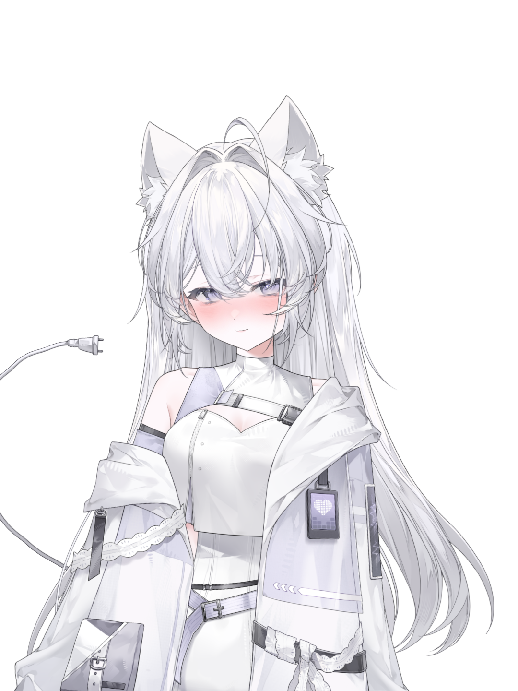

关于
若若子是 rrztt.site 的新人虚拟主播，目前还在熟悉直播间、练习歌单和寻找不尴尬的聊天话题。直播内容以杂谈、轻量游戏和偶尔的清唱为主。
不追求热闹，只希望每一次开播都比上一次自然一点。欢迎路过、点歌、或者只是发一条弹幕。
直播信息
直播平台
Bilibili · 若若子Official
直播时间
随机掉落
不固定日期，随缘开播
开播提醒
关注 B 站账号
开播前动态通知
粉丝 QQ 群
1104792192
欢迎加群聊天
主要内容
杂谈 / 游戏 / 清唱
偶尔练歌
about
关于
若若子是 rrztt.site 的新人虚拟主播，目前还在熟悉直播间、练习歌单和寻找不尴尬的聊天话题。直播内容以杂谈、轻量游戏和偶尔的清唱为主。
不追求热闹，只希望每一次开播都比上一次自然一点。欢迎路过、点歌、或者只是发一条弹幕。
身份
个人势 VUP
努力不冷场中
直播内容
杂谈 / 游戏 / 清唱
偶尔练歌
粉丝群
1104792192
欢迎加群聊天
想说的话
虽然刚开播不到十天，还很生疏，但每一次开播都会比上一次自然一点点。如果你路过直播间，留一条弹幕、点一首歌，就是给若若子最大的鼓励。
live
直播间
这里会接入若若子的 B 站直播间。在正式链接补上之前，可以先去 B 站搜索「若若子Official」关注动态。
平台
Bilibili
若若子Official
直播时间
随机掉落
关注动态获取通知
粉丝 QQ 群
1104792192
开播群内也会喊
正在查询直播状态…
contributors
贡献者名单
感谢所有为若若子官网做出贡献的朋友们！
（注：贡献者排序是以字母排序，并不是贡献程度）
HHmcME
网站建造者 · 群友专属音乐创作 · 《RRZLIKE-YOU~》
changelog
更新日志
- 界面优化与功能调整
- 📝 将主页标签「开播不到十天」改为「反正还是太可爱了」
- ✂️ 移除立绘的点击效果，防止误触弹出可爱文字气泡
- 📖 将历史记录内容直接迁移到更新日志页面，移除独立加载逻辑
- 🗑️ 移除关于页面的更新日志链接入口
- 🗑️ 移除顶栏的更新日志导航入口
- 🧹 删除历史记录依据文件（历史依据.json）和历史记录加载脚本（load-history.js）
- Cel Shading 风格重塑
- 🎨 Cel Shading 风格设计：米白背景 + 深黑边框 + 鲜艳强调色
- ✨ 方角设计（rounded: 0）：所有组件采用硬朗直角
- 🛡️ 粗边框风格（3px solid）：统一边框厚度
- 📦 硬阴影效果（无模糊）：3px 3px 0 阴影
- ⚡ 快速过渡动画（100ms）：响应更敏捷
- 🔤 大号粗体字：font-black uppercase
- 📱 响应式布局：适配各种屏幕尺寸
- 🎮 游戏组件完全移除：清理所有游戏相关代码
- 📝 更新日志独立页面：支持动态加载历史版本
- SEO 增强 & UI 优化
- SEO 增强：添加 keywords, author, robots meta 标签及 Open Graph/Twitter Card 社交分享元数据
- 新增移动端顶栏汉堡菜单，支持点击展开/收起和外部关闭
- 修复加载进度条：从容器的左侧移至屏幕最右侧（现改为严格靠左对齐）
- 修复进度条与百分比不同步问题，确保视觉进度与真实加载进度一致
- 优化移动端响应式样式，提升小屏设备体验
- 功能完善 & Bug 修复
- 贡献者名单中 HHmcME 标注为'网站建造者'
- 加载进度条紧贴屏幕左侧，贯穿全屏高度 (0 → 100vh)
- 百分比数字跟随进度点从上向下移动
- 修复音乐播放器暂停 Bug：点击暂停不再重新播放，支持继续播放
- 性能优化
- 优化加载动画性能
- 精简代码体积
- 加载动画重构
- 重构加载页面动画，移除 Logo 图标，改为屏幕左侧竖向进度条设计
- 进度条从顶部向下延伸，右侧实时显示百分比数值（0% → 100%）
- 新增贡献者页面
- 新增贡献者名单页面，可在'关于'页面底部查看
- 添加首位贡献者 HHmcME（群友专属音乐创作）
- 修复背景音乐与歌曲播放器互斥问题
- 修复播放器暂停按钮点击后重新播放的 Bug
- 优化音频预加载策略，改为 preload='none'节省流量
- 音乐播放器重构
- 重写音乐播放器核心逻辑，彻底修复点击无响应问题
- 移除音频预加载，改为点击播放时才加载，解决加载卡死问题
- 优化悬浮动画表达，基于卡片自身 transform 浮动
- 完善播放/暂停状态同步
- 音乐页面全新改版
- 音乐页面全新改版，采用网易云音乐风格设计
- 新增播放/暂停按钮，支持点击切换播放状态
- 实现歌曲互斥播放，播放新曲时自动暂停当前歌曲
- 优化卡片悬停效果，添加渐变光晕和浮动动画
- 新增音乐页面
- 新增音乐页面，收录群友原创音乐作品
- 首支单曲《RRZLIKE-YOU~》由 HHmcME 创作
- 优化播放器交互，支持多歌曲互斥播放
- 背景音乐播放功能
- 添加了音乐播放器，支持背景音乐播放/暂停
- 定义了默认背景音乐曲目
- 特效增强
- 加强了官网的特效与动画效果
- 初具人形
- 初具人形 - 官网首个正式版本发布